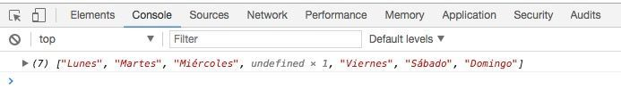

Manual Javascript
1.-Introducción
2.-Bases de Javascript
3.-Variables
4.-Mensajes
5.-Conversiones de datos
6.-Control del flujo del programa
7.-Arrays
8.-Funciones
9.-Objetos
10.-DOM
Introducción
Javascript es un lenguaje de programación que te permite
realizar actividades complejas en una página web, te permite
crear contenido nuevo y dinámico, controlar archivos de multimedia,
crear imágenes animadas y muchas otras cosas más.
Es la tercera capa del pastel de los estándares en las tecnologías
para la web, dos de las cuales son (HTML y CSS)
El javascript se puede enlazar a código html
Javascript es fácil de aprender lo usamos en paginas web
Una página web no es más que un fichero de texto (ASCII), escrito
en formato HTML.
Como ya sabemos el HTML es un lenguaje basado en
pares de tags y los navegadores traducen estos tags de forma
que presentan visualmente la página.
JavaScript es un lenguaje de programación creado por la empresa
Netscape es el lenguajes de programación más utilizado en Internet para añadir interactividad
a las páginas Web
Es muy importante no confundir el JavaScript con el Java.
El Java es un lenguaje
de programación de propósito general como lo son el C++ o el Visual Basic
Un programa en JavaScript se integra en una página web
(entre el código HTML) y es el navegador el que lo interpreta (ejecuta).
Es decir el JavaScript es un lenguaje interpretado, no compilado
(no se genera ningún tipo de fichero onjeto o exe).
Bases de JavaScript
Lo primero que debemos memorizar o tener muy en cuenta respecto al JavaScript
son sus etiquetas
Las etiquetas en JavaScript son:
< script > < /script >
y se puede incluye en cualquier parte del documento html. Pero se recomienda incluirlas dentro de la cabecera del documento (dentro de la etiqueta):
La consola de JavaScript
Una buena práctica para empezar a trabajar con JavaScript es hacerlo a través de la consola del navegador que se puede visualizar pulsando en botón derecho del ratón y pulsamos en inspeccionar y luego en la pestaña consola (En el caso de Chrome). Para poder visualizar la la información que necesitemos ver del código necesitamos conocer un comando console.log(”);
Separador de instrucciones (;)
No es necesario terminar cada sentencia con el caracter de punto y coma (;) como en la mayoría de lenguajes de programación. Aunque JavaScript no obliga a hacerlo, es conveniente hacerlo.
Comentarios en JavaScript
Los comentarios en el código sirven para dejar anotaciones del código sin
que afecten al funcionamiento de este. JavaScript acepta dos tipos de comentario.
// incluye comentario hasta el final de la linea.
/* comentario*/ para insertar comentarios en varias líneas
Variables
Las variable son “elementos” que contiene un valor fijo o dinámico y diferencian entre minusculas y mayusculas. El nombre de una variable debe empezar con una letra o con el carácter de subrayado _ (underscore/barra baja)
Existen muchos tipos de variables pero las más importantes son:
-De tipo String. Son variables donde su valor es texto, que siempre debe ir
dentro de ‘ ‘ (comillas simples) si dentro de este formato metemos números, PHP los reconocerá como texto, no como un número.
variablestring= ´Siempre Texto´;
-De tipo Integers. Son variables donde su valor son números enteros con los cuales podemos hacer, entre otras cosas, operaciones matemáticas.
variableintegers =38;
-De tipo Float. Son variables donde su valor son número decimales y se comportan igual que en anterior tipo.
variablefloat =45,60;
-De tipo Booleanos. Es un tipo de dato que indica verdad y solo acepta 2
valores TRUE o FALSE y se usan principalmente cuando necesitamos las condicionales.
variableboolean = true;
Ejemplos:
<script >
/ /las variables a diferencia de PHP se pueden declarar poniendo solo el elemento aunque se recomienda declararlas con la palabra reservada var
/ /declaro las variables
var nombre;
var apellido;
/ /ahora asigno un valor a las variables
/ / variable tipo string = cadena de caracteres "texto"
nombre = 'Joaquín';
apellido = 'López';
/ /variable tipo integers = Numeros enteros
edad = 38;
/ /variable tipo float = nuemros decimales
altura = 1.72;
/ /variable tipo boolean = valor 0/1. este valor aunque es una cadena de texto no va entre comillas
casado = true;
soltero = false;
/ /para comprobar que las variables funcionan usamos el comando de la consola poniendo entre los parentesis la variable
console. log(nombre);
console.log(edad);
console.log(casado);
</script>
Arrays
Un array es una agrupación de variables que pueden ser del mismo tipo (String, integer, float…) o cada una una de un tipo diferente.
Existen tres formas de definir las variables aunque la más usada es la tercera (Tipo_3), ya que con las anteriores existe un caso que la variable si solo tiene un elemento deja de ser un array. Estos elementos tiene que ir separados con coma (,).
Así por ejemplo:
<script>
variable_1 = new Array (elemento_1, elemento_2, elemento_3); //Tipo 1
variable_2 = Array (elemento_1, elemento_2, elemento_3); //Tipo 2
variable_3 = [elemento_1, elemento_2, elemento_3]; //Tipo 2
</script>
Para acceder desde una variable a algunos de los elementos del array las debemos definir de esta forma
<script>
var dias_semana = ["Lunes", "Martes", "Miércoles", "Jueves", "Viernes", "Sábado", "Domingo"];
quiero_lunes = dias_semana [0];
quiero_viernes = dias_semana [4];
alert(quiero_lunes);
alert (quiero_viernes);
</script>
Tengamos en cuenta que los elementos de un array se empiezan a contar desde el cero (0) y no desde el uno (1)
los arrays tienen unas funciones muy útiles que las complementan y que nos ayuda a realizar alguna acciones ya definidas por JavaScript.
Veamos las más usadas.
2.2.1 añadir elementos a un array con la función push
Por ejemplo, si queremos añadir un elemento llamado Juernes a nuestro ejemplo anterior y que tomaría el valor 7 lo haríamos así:
<script>
var dias_semana =[ "Lunes", "Martes", "Miércoles", "Jueves", "Viernes", "Sábado", "Domingo"];
dias_semana.push("Juernes");//método que añade elementos al array
console.log(dias_semana); //comprobamos que el array tiene elemento "Juernes" añadido
</script>
2.2.2 Calcula el número de elementos de un array con la propiedad length
<script>
var dias_semana = ["Lunes", "Martes", "Miércoles", "Jueves", "Viernes", "Sábado", "Domingo"];
numero_dias = dias_semana.length;
console.log(numero_dias); //comprobamos que el array tiene elemento "Juernes" añadido
</script>
2.2.3 Borrar elemento de un array con la función delete
Cuando se utiliza este método lo que realmente hace es eliminarlo pero deja el espacio en blanco.
<script>
var dias_semana = ["Lunes", "Martes", "Miércoles", "Jueves", "Viernes", "Sábado", "Domingo"];
delete dias_semana [3]; //Borramos el Jueves. Esto genera la ranura 3 vacia
console.log(dias_semana); //comprobamos que el array tiene elemento "Juernes" añadido
</script>
En consola aparecería así:

2.2.4 Actualizar los elementos de un array
Nos ayudará o bien a reemplazar un elemento que ya se encuentra en una variable o para completar un espacio vacío como en el caso anterior.
<script>
var dias_semana = ["Lunes", "Martes", "Miércoles", "Jueves", "Viernes", "Sábado", "Domingo"];
//Borramos el Jueves. Esto genera la ranura 3 vacia
delete dias_semana [3];
//Actualizamos el espacio vacio 3 nuevamente
dias_semana [3] = "Jueves";
//Ahora vamos a actualizar el elemento "Jueves" por "Juernes"
dias_semana [3] = "Juernes";
console.log(dias_semana); //comprobamos que el array tiene elemento "Juernes" añadido
<script>
Operadores
Los operadores son elementos que nos permiten cambiar el valor de las variables, comparar diferentes variables y realizar operaciones matemáticas. Los operadores permiten a los programas tomar decisiones lógicas en función de comparaciones y otros tipos de condiciones y realizar cálculos complejos.
Asignación (=)
Incremento y decremeto (++) | (–)
Lógicos
– Negación (!)
– AND (&&)
– OR (||)
Matemáticos suma (
+
), resta (
-
), multiplicación (
*
) y división (
/
) y el operador “módulo” (%) ver documentación para entender
Relacionales mayor que (
>
), menor que (
<
), mayor o igual (
>=
), menor o igual (
<=
), igual que (
==
) y distinto de (
!=
)